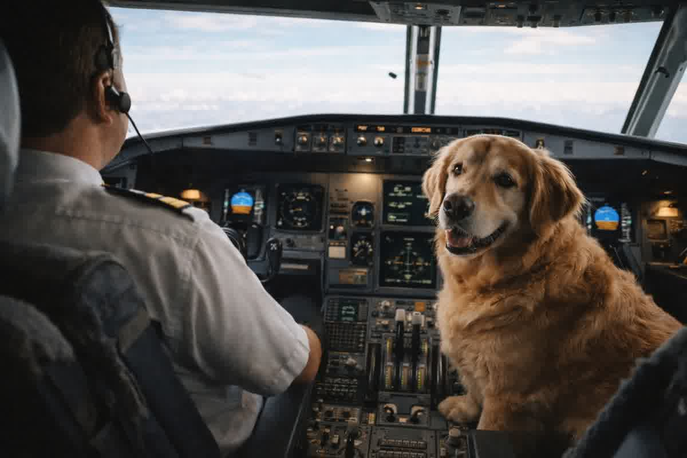
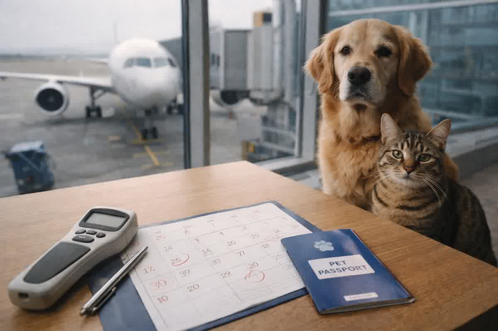

De vrais critères pour décider d'une cabine ou d'un entrepôt à Golden et Labrador : taille du conteneur, pressurisation, stress, documentation et points critiques avant d'acheter des billets.

Un Golden ou un Labrador n'échoue pas pour « mauvaise conduite » à l'aéroport. Son échec est dû à une décision prise des semaines auparavant : supposer que la cabine et la soute sont deux versions du même voyage.
En consultation, l'erreur que l'on constate le plus à Trujillo est de choisir un mode de transport sans mesurer le chien et sans comprendre ce que signifie « entrepôt sous pression ». Lors de l'enregistrement, cette confusion n'est plus corrigée.
Ce texte organise les critères des chiens dorés et Labrador en vol sans promettre de raccourcis ni vendre de tranquillité : la cabine n'est presque jamais une question de volonté, et la soute n'est pas synonyme de maltraitance.
La cabine est conçue pour un conteneur qui se place sous le siège avant. Le paramètre de contrôle est le volume utile et non le poids sur une balance. Un chiot peut s'adapter là où un adulte ne peut pas, même s'il s'agit de la même race.
Les Goldens et les Labradors adultes sont généralement laissés de côté en ce qui concerne la hauteur du garrot, la largeur de la poitrine et la longueur du corps. Le point pratique est simple : si le chien ne peut pas entrer, se retourner et s'allonger sans comprimer le thorax et l'abdomen, il n'est pas en mesure de voyager dans cet espace.
Lorsqu’une famille insiste pour « essayer en cabine », elle finit par payer un changement de plan de dernière minute : déménagement à l’entrepôt, réemballage, stress aigu dû à la manutention et temps supplémentaire dans la zone d’embarquement. C’est le scénario que l’on évite en planifiant avec des mesures réelles.

La soute pour animaux sur les vols commerciaux n’est pas un compartiment airless. En fonctionnement standard, la zone pour animaux de compagnie se déplace avec un contrôle de température et une pressurisation connectés au système de l'avion. Cela n’en fait pas pour autant une chambre d’hôpital : il s’agit tout de même d’un environnement hypobare, avec une pression partielle d’oxygène plus faible qu’au niveau de la mer.
Un chien en bonne santé compense cette baisse par des changements physiologiques normaux : augmente la ventilation, ajuste la fréquence cardiaque et maintient la saturation dans des plages compatibles. La marge se rétrécit en cas d’obésité, d’âge avancé, de maladie respiratoire ou d’anxiété qui déclenche un halètement soutenu.
La taille est la principale raison pour laquelle ils finissent en soute, mais ce n’est pas la seule. Golden et Labrador ont des profils de risque différents en raison de leur état corporel et de leur thermorégulation. Un Labrador en surpoids et haletant au repos n’est pas évalué de la même manière qu’un Golden athlétique avec une bonne tolérance à l’exercice.
La variable la plus sous-estimée est la chaleur. Le chien ne se « calme » pas à l’intérieur du conteneur s’il arrive avec une température élevée, une excitation et une respiration rapide. L’environnement aéroportuaire, l’attente et la prise en charge peuvent vous faire haleter pendant des heures. Chez les grands chiens, cette tendance augmente les coûts respiratoires et augmente la déshydratation.
Une autre variable réelle est le comportement à l’intérieur du conteneur. Un chien qui se jette contre les murs, mord la porte ou se frappe en essayant de sortir n'est pas « têtu » ; est en panique. Ce comportement transforme un transfert techniquement sûr en un voyage avec risque de blessure, et est corrigé par une formation préalable et non le jour de l'embarquement.
En soute, le conteneur fait à la fois office de harnais et de casque. Il doit permettre une posture naturelle, un tour complet et un repos avec le sternum soutenu, sans que le plafond ne fatigue le cou. À Golden et Labrador, l'erreur typique est d'acheter au poids « maximum », et de se retrouver avec un espace qui ne respecte pas les proportions.
La ventilation est un autre point critique. Les aérations latérales ne compensent pas une porte avec peu d'entrée d'air si le chien est haletant. Une porte rigide, des fermetures fermes et un matériau qui ne s'effondre pas sous le chargement latéral sont des exigences opérationnelles et non esthétiques.
Pour les vols internationaux en provenance du Pérou, le conteneur fait également partie du processus documentaire : étiquettes, identification visible et compatibilité avec les inspections. À Trujillo, nous constatons que de nombreux retards proviennent de la correction de détails simples lorsqu'il n'y a plus de marge de temps.
La décision de cabine ou de soute est prise après avoir mesuré : la hauteur à l'arrière, la longueur du bout du nez à la base de la queue et la largeur du thorax. Avec ces mesures, le conteneur est choisi et il est prévu si la cabine est physiquement possible. Sans chiffres, tout le reste n’est qu’opinion.
L’état clinique est défini par l’examen et les antécédents, et non par « ça semble bon ». Un chien présentant une toux récente, une intolérance à l'effort, une crise gastro-intestinale ou des douleurs ostéoarticulaires change de catégorie. Le certificat sanitaire a une fenêtre de validité et est délivré sur la base d'un état clinique réel et non d'une intention de voyager.
La chaîne documentaire est construite dans l'ordre. Les micropuces, les vaccins, les certificats et l'endossement officiel ne sont pas des pièces interchangeables. Lorsque l’ordre est inversé, l’erreur peut être irréversible et forcer le redémarrage des délais. Cette logique est décrite dans la série technique car c'est le même schéma qui se répète lors des consultations à Trujillo et dans d'autres régions du Pérou.
Un mauvais choix de mode peut exclure votre chien du vol le jour même, avec des délais sanitaires qui ne conviennent plus et des dépenses qui ne sont pas récupérées. Zoovet Travel constitue le dossier, définit le plan clinique et vous indique avec des critères mesurables si les chiens dorés et Labrador en vol sont résolus en soute ou s'il existe une véritable option cabine. Contact : WhatsApp et agenda chez Zoovet Travel (Trujillo, Pérou). Nous travaillons avec une traçabilité documentaire, pas avec des captures d'écran et des hypothèses.